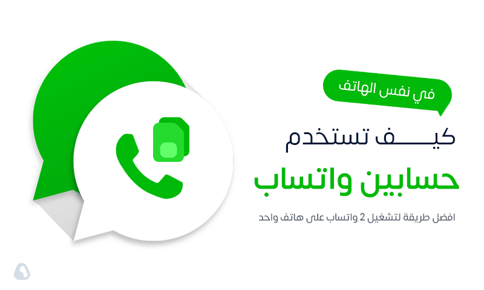

ADS
المعلومات الفنية
| نظام التشغيل | اندرويد 4.4 والأحدث |
|---|---|
| الإصدار | 21.50 |
| التصنيف | الاتصال, تطبيقات بلس |
| اللغات المعتمدة | العربية +39 لغة أخرى |
| آخر تحديث | 1 نوفمبر، 2022 |
| المطور | Abu3rab |
| الحجم | 57 م.ب |
| التقييم | 4.7 |
لقطات الشاشة
- 
ما الجديد في واتساب الذهبي 2023 WhatsApp Gold اصدار 21.50
- إضافة ميزة تسريع التسجيلات والمقاطع الصوتية.
- إصلاح مشكلة إعادة تصميم شاشة قفل النمط.
- تم حل مشكلة إرسال الرسائل في مجموعات يستغرق وقتًا طويلاً.
- مشكلة اخفاء الظهور علامة زرقاء عند تعطل الرد.
- إضافة اخفاء الصورة و الفيديو بعد مشاهدته يمكنك ذالك عندما تحدد وسائط لأرسالها.
- إعادة تعيين التفضيلات الآن أيضًا تعيد تعيين الخلفية الافتراضية.
- تحطم ثابت باستخدام Status Splitter في بعض الهواتف (وليس جميعها).
- إصلاح: تأخير ارسال الرسائل في الواتساب الذهبي.
- إضافة /خيار لتغيير لون اشارة متصل (الاضافات > الشاشة الرئيسية > الاسطر).
- اضافة خيار لاختيار بين الترجمة الفورية و ترجمة غوغل.
- رفع مدة الحالة اكثر من ساعة حتى في حال تغيير الثيمات.
- حل مشكلة تأخير ارسال الرسائل في الواتساب.
- إصلاح الوسائط لا يتم تنزيلها ومشكلات الاتصال في البكجات.
- إضافة /عرض جميع الرسائل المرسلة عن طريق جهة الاتصال في المجموعة (انقر فوق الاسم).
- إضافة /تحميل الصورة او الفيديو عند ارسالها لمرة واحدة.
المراجعة
تحميل واتساب الذهبي آخر إصدار 21.50 ضد الحظر برابط مباشر
تنزيل الواتس الذهبي للاندرويد أحد أهم التطبيقات التي يحتاج إليها جميع المستخدمين الذين يستعملون برامج المراسلة، كما أن واتس اب الذهبي يمتلك كل المزايا التي ستحتاج إليها والغير موجودة في الأصلية من واتساب الذهبي 2023، ويمكن لك الانتفاع بالكثير من الخصائص الرائعة التي ستجدها بعد تحميل الواتس الذهبي كما أن الإصدار الأساسي يوجد بها كل ما تحتاج إليه حيث ستتمكن من تغيير خصائص تحميل واتس الذهبي عن طريق الإضافات المميزة الموجودة بهذه النسخة.
بعد تثبيت واتساب الذهبي ستجد أنك تتمكن منه الانتفاع بمميزات عديدة وخاصة في هذا التحديث تشبه كثيراً تلك التحديثات في نسخ انستقرام مهكر مثل انستا برو حيث ستجد مزايا أخرى لم تكن متوفرة سابقًا، كما أنه متوفر فقط على هواتف الاندرويد وغير موجود على أجهزة الأيفون كما أنه لا يمكنك الحصول عليه من المتجر الرسمي فهو متوفر فقط على موقع المطور أو من موقعنا حيث سنوفر لك كل المعلومات الخاصة به وطريقة التحميل الآمن والتثبيت أيضًا دون أي مشاكل كل ما عليك فقط هو متابعة الفقرات.
حول تنزيل الواتس الذهبي وما يوفره لك
شاهدنا بشكل ملحوظ في السنوات الأخيرة الكثير من التطبيقات والبرامج المشهورة في جميع المجالات وأيضاً رأينا الكثير من الاهتمامات من قبل مستخدمي الإنترنت حول العالم لنسخ المحادثة كما أنه يوجد الكثير منهم ولكن بالطبع لا يوجد مثل واتساب الذهبي للاندرويد الشهير الذي يعتبر أفضل أداة مراسلة ورأينا تطور كبير في واتس اب الذهبي وكان تحميل الواتس الذهبي في أول إصداراته يعتمد على بعض المهام فقط وكان يقدم المحادثات ورفع الحالات وبعض الخصائص الإضافية الأخرى فقط.
بعد تثبيت واتساب الذهبي للاندرويد ستجد أنه يوفر لك الكثير من المزايا والخصائص الرائعة التي ستفيدك أثناء التجول حيث يمكن لك من إضافات تحميل واتس اب الذهبي الوصول إلى الدردشات الذي من خلاله ستتمكن من تعديل الخصائص وأيضاً تغيير خصائص الواجهة الرئيسية وهذا لن تجده في الأصلية حيث باستطاعتك أيضاً تفعيل بعض الخيارات الأخرى المميزة مثل إخفاء أنك قمت بمشاهدة الحالة أو عدم حذف الرسائل أيضاً والكثير من الخصائص الأخرى التي توفرها لك.
شرح طريقة تثبيت واتس اب الذهبي للاندرويد
سنقوم الآن بشرح طريقة تنزيل WhatsApp Gold على هواتف الاندرويد وسوف نقوم أيضاً بشرح طريقة تثبيته على بعد تنزيله، كل ما عليك متابعة الشرح التالي حتى تتمكن من القيام بهذا الأمر:
- عندما تريد تحميل واتس الذهبي للاندرويد كل ما عليك الضغط على الرابط الموجود في الأعلى والذي سيقوم بتحويلك إلى رابط واتساب الذهبي 2023 بعد ذلك مباشرة على الفور.
- بعد ذلك تضغط على زر تنزيل الواتس الذهبي الموجود أمامك وتنتظر حتى انتهاء العملية ثم تذهب إلى ملف الحفظ وتقوم بالنقر عليه وتثبيته على هاتفك بعد ذلك مباشرة الآن.
- إذا طلب منك الهاتف السماح لتثبيت التطبيقات الغير معروفة يجب عليك الدخول إلى الإعدادات ثم الخصوصية وبعد ذلك تذهب إلى خاصية السماح بهذا الأمر ثم تعود لتثبيت واتساب الذهبي مرة أخرى.
- بعد تثبيت ملف واتس اب الذهبي على هاتفك يمكن لك بعد ذلك الدخول إليه مباشرة وتحديد موافق على الشروط ثم ستتمكن من التسجيل فيه بواسطة الطريقة التي قمنا بشرحها.
مراجعة على تحميل واتس الذهبي للاندرويد
عن طريق ما يلي من الشروحات الآتية سنقوم بتوضيح أبرز الفقرات التي تخص كل محتويات هذا البرنامج لتتمكن من استخدامه بالطريقة الصحيحة، كل ما عليك متابعة قراءة ما يلي من الشروحات:
أولاً: محتويات واتساب الذهبي الرئيسية
الرئيسية: عندما تفتح واتساب الذهبي ستجد أمامك الواجهة الرئيسية مقسمة إلى ثلاثة أقسام الدردشات والحالات والمكالمات ثم ستجد أمامك جميع المحادثات مع أصدقائك وأقاربك في الشاشة وستعثر في الأسفل على علامة بلس والتي يوجد بداخلها أيقونة الأرقام التي مسجلة على هاتفك بإمكانك الضغط عليها ومكالمة أي شخص عبر واتس اب الذهبي، وأيضاً ستذهب إلى قسم الإضافا بعد تنزيل الواتس الذهبي من خلال هذه الواجهة عن طريق النقر على القائمة الجانبية.
المكالمات: هنا ستجد جميع الاتصالات التي قمت بها في واتساب الذهبي وسيتم تنبيهك إذا فاتتك مكالمة عن طريق الإشعارات أو إذا كنت تقوم بقفلها ستشاهد في القسم بعد تحميل واتس الذهبي أيقونة يوجد بداخلها عدد المكالمات الفائتة ومعرفة التوقيت الذي قمت فيه بالمكالمة مع شخص ما أو معرفة تفاصيل أي مكالمة أخرى و أيضاً الوصول إلى الدردشات من هنا والتحويل إلى الحالة عن طريق واجهة المكالمات والضغط على أيقونة اتصال بالصوت والصورة في الأسفل.
الحالة: في هذا القسم لـ واتساب الذهبي باستطاعتك إرسال حالة عن طريق النقر على علامة الكاميرا التي توجد في الأسفل أو إذا كنت تريد إرسال حالة كتابية من أيقونة القلم الموجودة في قسم الحالات كما ستجد أيضاً الحالات الجديدة لـ أصدقائك وأقاربك ومعرفة عدد من شاهدوا حالتك في واتس اب الذهبي عن طريق الضغط على ثلاث نقاط التي توجد بجانب الحالة بعد تنزيل الواتس الذهبي أو النقر على حالتك وستعرف أيضا كم عدد الأشخاص الذين شاهدوها.
الإعدادات: ستدخل ضبط حسابك في واتساب الذهبي عن طريق الذهاب إلى الثلاث نقاط في أعلى الشاشة والدخول إلى الإعدادات في آخر القائمة ومن خلال هذه القائمة يمكن لك الدخول إلى عدة تفاصيل مثل الإشعارات وتعديلها كما تريد وأيضاً الدخول إلى الدردشة لتتمكن من عمل نسخة احتياطية للدردشة وأيضاً بعد تحميل واتس الذهبي عمل قفل عن طريق الذهاب إلى حساب ثم اختيار أمان كما يمكن حذف حسابك إذا أردت أيضاً ودعوة صديقك لاستخدام هذه النسخة.
ثانياً: محتويات واتساب الذهبي الفرعية
إضافات الذهبي: ستصل إلى هنا في واتساب الذهبي ومن خلاله ستقوم بالتعديل على الكثير من الإضافات مثل الخصوصية والآمان حيث باستطاعتك من هنا الوصول إلى تفعيل العديد من الخواص مثل تفعيل وضع صحيح القراءة التي من خلالها ستقرأ الرسائل دون أن يعرف الشخص الآخر أنك شاهدت الرسالة في واتس اب الذهبي، وأيضاً من قسم الإضافات ستصل إلى التحديثات الأخيرة والدخول إلى الإشعارات وإلى تبديل الحساب بعد تنزيل الواتس الذهبي الجديد.
إعدادات الخصوصية: بإمكانك الوصول إلى هنا بعد تحميل واتس الذهبي إذا كنت تريد تغيير بعض الإعدادات الخاصة بالخصوصية أو إذا كنت تريد تعديل بعض الأشياء الأخرى مثل إخفاء آخر ظهور لك على واتساب الذهبي أو توقيف إشارة محولة أو إخفاء أنك قمت بمشاهدة الحالات لأي شخص وتفعيل وضع منع أي شخص حذف الحالة الخاصة به من قائمة الحالات والنقر على إظهار صحين الأزرق فقط بعد الرد على الرسالة وتغيير بعض إعدادات المجموعات.
إعدادات الإشعارات: واتساب الذهبي يوفر لك قسم مميز جداً موجود في الإضافات وهو الإشعارات الذي منه ستقوم بتعديل بعض خواص الإشعارات مثل شكل الأيقونة ومكان ظهورها وأيضاً تحديد خيار عدم ظهور الإشعارات من هذه القائمة أو إلغائها من إعدادات الإشعارات الخاصة بالهاتف ولكن إشعارات تنزيل الواتس الذهبي مهمة للغاية ويمكنك أيضاً من هذه القائمة تحديد خيار إشعار من قام بمشاهدة حالتك ومن قام بتعديل صورة الملف الشخصي الخاص به على واتس اب الذهبي.
المظاهر: من أهم وأفضل الأقسام التي ستجدها بعد تحميل واتس الذهبي منه ستقوم بتعديل المظهر بالكامل حيث باستطاعتك الدخول إليه من إضافات واتساب الذهبي ومن هنا سوف تشاهد عدد كبير من الأشكال المميزة التي يمكن لك أن تقوم بتغييرها وأيضاً الوصول إلى الصور الخاصة بهذه المظاهر عن طريق الضغط على الصور الموجودة أمامك حتى تعاين قبل تغيير الشكل وأن تقوم بهذا الأمر بعد التثبيت مباشرة، وستتمكن من تغيير المظهر عن طريق الضغط على تغيير الموجودة أمامك.
شرح إضافات تحديث واتساب الذهبي الجديدة
تتوفر بعض الإضافات المميزة في واتساب جولد ستجدها بعد تثبيته، لذلك سنعرض عليك أبرز الإضافات الموجودة في هذه النسخة خاصة للمستخدمين الذين يعملون عليه ويحتاجون إليها أيضًا:
- تم توفير ميزة الترجمة السريعة في المحادثات في واتساب الذهبي وهي من أبرز الإضافات المميزة التي ستحتاج إليها لأنها تغنيك عن ترجمة الكلمات من برنامج آخر أو موقع مثل ترجمة جوجل.
- تمت إضافة إعدادات الحفظ التلقائي للوسائط المخصصة لكل دردشة وهذه الميزة بإمكانك استعمالها بعد تنزيل الواتس الذهبي وتخصيصها من خلال الدردشة في واتس اب الذهبي.
- تم إصلاح رفع مدة الحالة أكثر من ساعة حتى في حال تغيير المظهر وهذه الإضافة القوية ستتمكن من خلالها رفع الحالات أكثر من المدة الافتراضية في واتساب الذهبي 2023 للاندرويد.
- إصلاح تقطيع الحالة لنظام اندرويد 10 وهذا الحل مميز لكل المستعملين الذين قاموا بـ تحميل واتس الذهبي ويريدون استخدامه وواجهوا هذه المشكة يمكنهم الآن استخدامه دون أي مشاكل.
- تم إصلاح النسخ الاحتياطي الكامل الثابت لا يعمل على اندرويد 11 وهذه كانت مشكلة لمن يواجهون عدم إمكانية النسخ الاحتياطي هنا ولكن تم حل هذه المشكلة الآن وسيعمل معك.
التسجيل في واتساب الذهبي التحديث الأخير
من أبرز المشاكل التي من الممكن أن تواجهها هي طريقة التسجيل ولكن خلال هذه الفقرة سنقوم بشرح طريقة التسجيل بكل سهولة، وهي لا تختلف عن الطريقة العادية في النسخة الأساسية، كل ما عليك متابعة الشرح التالي حتى تتمكن من القيام بهذا الأمر بسهولة:
- في البداية بعد تحميل واتس الذهبي والتثبيت قم بالدخول إلى واتساب الذهبي 2023 ثم قم بالضغط على موافق التي ستجدها أمامك في واجهة التسجيل التي تظهر لك مباشرة.
- ثم سينقلك واتس اب الذهبي إلى صفحة التسجيل التي يوجد بها عدة أمور يجب عليك تسجيلها أولاً، تقوم بتحديد الدولة التي تقيم بها ثم تكتب رقم هاتفك وقم بالضغط على التالي.
- بعدما تنقر على التالي سينقلك واتساب الذهبي إلى الصفحة التي ستقوم بكتابة الكود الخاص بك الذي قامت شركة تنزيل الواتس الذهبي بإرسالها لك لتتأكد أنك أنت الذي تملك هذا الرقم.
- قم بكتابة الكود المرسل إليك ثم بعد ذلك سيحولك تلقائياً إلى صفحة التسجيل ثم ستذهب إلى آخر خطوة في التسجيل في جولد وهي التي سنقوم بشرحها لك في باقي الخطوات القادمة.
- بعد ذلك ستظهر لك صفحة تكتب فيها اسمك وتقوم بإضافة الصورة وتضغط على إنهاء وبذلك ستكون قد انتهيت من التسجيل والآن ستعمل على هذا الإصدار بشكل نهائي.
لماذا ستحتاج إلى واتساب الذهبي آخر تحديث؟
واتساب الذهبي يقدم لك كل المزايا التي ستحتاج إليها حيث أنك إذا كنت تريد استعمال خاصية غير متوفرة في الأصلية بإمكانك استخدامها هنا، فعلى سبيل المثال إذا كنت تريد استعمال ميزة إخفاء أنك شاهدت الحالة الخاصة بأي شخص يمكن ذلك هنا وهذا غير متوفر في الأصلية ومن هنا ستستخدم المزيد من الخواص كما أن كل تحديث ستجد أنه يوفر لك تحديثات إضافية عن السابقة وهذه ميزة رائعة جداً حيث أنك لن تحتاج إلى أي برنامج آخر يقدم لك خدمات أفضل من هذا الرائع والمميز للاندرويد.
تعريف WhatsApp Web وشرح الاتصال به
نظام الـ WhatsApp يوفر لك ربط حسابك بموقع خاص بالشركة حتى تستخدم حسابك على واتساب جولد في الكمبيوتر الخاص بك، لذلك سنقوم بتعريف الواتساب ويب وشرح طريقة الاتصال به الآن من خلال الفقرات الآتية:
أولاً: تعريف WhatsApp Web
WhatsApp Web هو عبارة عن اتصال واتساب الذهبي بالكمبيوتر أو اللاب توب الخاص بك حتى تستطيع استخدام حسابك على البرنامج في أكثر من جهاز، وبالتأكيد لا يقتصر فقط نظام الويب على الاتصال بالكمبيوتر أو اللاب توب أو نظام الماك بل تستطيع الاتصال بحسابك في أي جهاز آخر سواء أجهزة هواتف الاندرويد أو غيره من الأنظمة الأخرى وبإمكانك ذلك من خلال تطبيق خارجي إذا كنت تريد الاتصال عن طريق جهاز بهذا النظام ولكن آخر، تابع ما يلي من الشروحات التالية.
ثانياً: شرح الاتصال بينه وبين واتساب الذهبي
- لتتمكن من التسجيل في نظام الويب تقوم بالدخول إلى الواجهة بعد تنزيل الواتس الذهبي من خلال الثلاث نقاط فى الواجهة الرئيسية ثم تقوم بالضغط على WhatsApp Web الموجودة داخل هذه القائمة.
- ثم قم بفتح موقع واتساب ويب في الكمبيوتر أو الجهاز الآخر الخاص بك حتى يمكنك التسجيل بواسطة حسابك الشخصي على واتساب الذهبي الذي حصلت عليه من موقعنا برابط مباشر.
- ثم قم بتصوير رمز الـ QR فى الكمبيوتر بواسطة كاميرا واتس اب الذهبي وسيتم الاتصال بعد ذلك تلقائياً بين البرنامج أو هاتفك وبين الكمبيوتر الي قمت بالتسجيل من خلاله بعد تحميل واتس الذهبي.
- تذهب إلى الموقع ثم تبدأ في استعمال المميزات التي يمنحها لك الموقع مثل مشاهدة الحالات ويمكنك أيضاً الدردشة مع الأصدقاء مثل واتساب الذهبي وتغيير الإعدادات إذا كنت تريد.
طريقة التحقق بخطوتين في واتساب الذهبي
يوفر لك هذا الإصدار إمكانية الوصول إلى خدمة التحقق بخطوتين والتي تعتبر من أهم المزايا الموجودة به بشكل عام سواء الأصلي أو هذه النسخة، لذلك سنقوم بشرح طريقة التحقق كل ما عليك متابعة الشرح التالي:
- هذه ميزة رائعة ومهمة يجب التحدث عنها وهي تتلخص في حماية حسابك من السرقة من قبل مستخدمين آخرين وتمنع أي شخص من اختراقك، كل ما عليك بعد تنزيل الواتس الذهبي الذهاب إلى الصفحة الرئيسية.
- يمكن تفعيل هذه الميزة عن طريق الذهاب إلى الواجهة ثم تنقر على أيقونة الثلاث نقاط في جانب واتساب الذهبي ثم قم بالدخول إلى الإعدادات أسفل القائمة المعروضة أمامك ثم قم بالنقر على حساب.
- قم بالضغط على أيقونة (التحقق في خطوتين) ثم تقوم بعمل تفعيل بعد ذلك ستظهر لك صفحة أخرى من خلالها ستكتب الرقم الذي تريده في هذه الصفحة حتى تفعل وضع التحقق بعد تحميل واتس الذهبي.
- قم من خلال هذه الصفحة الموجودة في واتساب الذهبي بكتابة 6 أرقام لتتمكن من حماية حسابك على واتس اب الذهبي من الاختراق، وبإمكانك أن تفعل هذه الخاصية في كل التحديثات السابقة والنسخ.
طريقة إنشاء مجموعة في برنامج واتساب الذهبي
يوفر لك واتساب جولد ميزة إنشاء مجموعة إذا كنت تريد التواصل مع أكثر من شخص في وقت واحد، يمكنك ذلك بكل سهولة بعد قراءة الخطوات التالية التي سنقوم بشرحها لك:
- أول خطوة يجب أن تقوم بها بعد تنزيل الواتس الذهبي للاندويد هي الذهاب إلى الثلاث نقاط ثم بعد ذلك قم بالضغط على إنشاء مجموعة جديدة في واتساب الذهبي 2023.
- ثم بعد ذلك تختار أعضاء المجموعة ثم تنقر على زر الذي سينقلك إلى الخطوة التالية لإنشاء مجموعة خاصة في واتس اب الذهبي للاندرويد التحديث الأخير له من موقعنا.
- في آخر خطوة ستقوم بها بعد تحميل واتس الذهبي هي كتابة اسم المجموعة، ويمكنك كتابة اسم حروف أو أرقام وأيضاً إضافة رموز تعبيرية من التي توفرها لك هذه النسخة.
تفعيل النسخ الاحتياطي في واتساب الذهبي
من أكثر الأشياء التي ننصحك أن تقوم بها بعد تثبيت هذا الإصدار على جهازك هي تفعيل خاصية النسخ الاحتياطي حتى تتمكن من الحفاظ على معلومات حسابك والدردشات أيضاً، لذلك سنقوم بشرح طريقة القيام بهذا الأمر:
- من خلال الواجهة الرئيسية الخاصة بـ واتساب الذهبي 2023 تذهب إلى القائمة الجانبية الموجودة في واجهة البرنامج ثم بعد ذلك تضغط على الإعدادات بعد تنزيل الواتس الذهبي.
- ثم تضغط على قسم الدردشات أولاً والذي سيفتح معنا صفحة من خلالها ستقوم بعمل نسخ احتياطي للدردشات، وأيضاً الدخول إلى خصائص أخرى بعد تحميل واتس الذهبي على جهازك.
- عندما تدخل إلى الصفحة الخاصة بالدردشات ستجد أمامك كلمة نسخ احتياطي كل ما عليك الضغط على هذه الكلمة وسيقوم تلقائياً بعمل نسخ احتياطي للمحادثات الخاصة بك واتس اب الذهبي.
أسباب وحلول مشكلة تحديث واتساب الذهبي
هناك العديد من المشكلات التي ستواجهها بعد تثبيت هذا الإصدار على جهازك الشخصي لذلك سنقوم بتوضيحها لك وطريقة التعامل معها بطريقة سهلة، كل ما عليك قراءة ما يلي من الفقرات التالية:
أولاً: حول مشاكل تحديث واتساب الذهبي
بعض المستخدمين يواجهون مشكلة كبيرة جداً وهي تحديث واتساب الذهبي التحديث الأخير، ويواجه بعض الأشخاص الأخرين مشاكل أخرى وهي أن كل تحديث يحتاج إلى تنزيل خاص من موقع المطور لذلك الأمر صعب للبعض وقد تواجهك هذه المشكلة وقد لا تواجهك حيث أن البعض لا تواجههم والبرنامج يقوم بالتحديث التلقائي دائماً دون الحاجة إلى أي تحديثات خارجية سواء من موقع المطور أو أي موقع آخر، لذلك يجب أن نقوم بتوضيح هذه المشكلة التي تواجه البعض وسنشرح حلها أيضًا.
ثانياً: طريقة التعامل مع مشاكل واتساب الذهبي
- عندما يأتي الدور على تحديث جديد لـ واتساب الذهبي يجب عليك تحميل واتس الذهبي من خلال الموقع المطور أو من موقعنا الذي يوفر لك كل التحديثات دائماً بطريقة مستمرة.
- بعض المستخدمين لا يريدون تحديث تنزيل الواتس الذهبي 2023 من الموقع المطور أو من خلال أي مصدر آخر ولكن هذا الأمر صعب للغاية لأن هذا من تطوير مطورو البرنامج.
- إذا قمت بتحديث النسخة الأخيرة لـ واتس اب الذهبي ولم يقوم التطبيق بالتحديث في الحال تأكد من ضبط وقت الهاتف جيداً لأن هذه الخطوة هي السبب في عدم تشغيله.
- عندما يأتي الدور على تحديث وتنزيل واتساب الذهبي قم بالنقر على تنزيل الموجودة أمامك في الواجهة ثم إذهب لتنزيل النسخة الأخيرة وبعد ذلك قم بتثبتها على الأولى.
- لا تحاول أن تقوم بإلغاء تثبيته عندما تريد تشغيل التحديث الأخر الجديد حتى لا تفقد كل المعلومات مثل الرسائل والمميزة بنجمة، وحاول تفعيل وضع النسخة الاحتياطية دائماً.
أبرز بدائل واتساب الذهبي الجديد للاندرويد
تتوفر بعض البدائل المميزة التي تستطيع الإعتماد عليها والتي ستوفر لك بعض المزايا العامة، لذلك سنقوم بتوفير بعض التطبيقات الخاصة بالاتصال والمراسلة مثل الواتس الجولد للاندرويد الآن:
فايبر الذهبي – Viber Gold
فايبر الذهبي الذي بإمكانك من خلاله الدردشة مع الأشخاص سواء فيديو أو مكالمة صوتية ومحادثة كما يتميز أنه أمن جداً مثل واتساب الذهبي ويقوم بتشفير جميع المحادثات كما يوجد قسم للمكالمات لتتمكن من عمل دعوة لجهات اتصالك لاستخدام فايبر والاتصال بهم في جميع الأوقات كما توجد به ميزة إخفاء الدردشات الخاصة بك وقسم الأرقام المحظورة كما باستطاعتك تغيير اللغة ويوجد بداخلة مذكرة لتتمكن من تسجيل بعض الكلمات وهذا غير موجود بعد تنزيل الواتس الذهبي.
واتس اب الاحمر – WhatsApp Red
من أبرز البدائل المميزة لـ تحميل واتس الذهبي هو واتساب الاحمر الذي تستطيع من خلاله استعمال الكثير من الخواص المتوفرة مع واتس اب الذهبي، ستجد فيه إمكانية تفعيل وضع تصحيح القراءة التي من خلالها ستقرأ كل الرسائل دون أن يعرف الشخص الآخر وهذه الميزة ستشاهدها في واتساب الذهبي، وأيضاً من خلال هذا التحديث ستقوم بتفعيل ميزة رائعة جداً وهي إخفاء آخر ظهور لك مثل التي تتواجد في واتس اب الذهبي الذي تحدثنا عنه الآن في هذا المقال على موقعنا.
ايمو بلس – imo Plus
واحد من التطبيقات المميزة في عالم الدردشة والمكالمة الصوتية متميز جداً تتمكن من خلاله إرسال الحالات والتعليق عليها ويوجد إعدادات توجد فيها تغيير اللغات والخصوصية والأمان والإشعارات واستعراض ملفك الشخصي على imo كما بإمكانك عمل دعوة لبعض الأشخاص لاستعماله ليمكنه المراسلة معك في أي وقت آخر كما يمكنك الدخول في المجموعات المقترحة من ايمو وتتوفر بعض المزايا فيه موجودة في واتساب الذهبي من الممكن الرجوع إلى كل الشروحات السابقة.
أبرز ما يميز واتساب الذهبي للاندرويد
- الأمان: يدرك تماماً مطورو واتساب الذهبي أن كل ما يهم المستخدم هو الأمان التام من حيث معلومات حسابه أو من حيث الدردشة الموجودة بين شخص و الآخر وهذا تماماً ما يحاول المطورين أن يهتموا به وهذا ما نشاهدة في كل التحديثات المتوفرة لك.
- مشاركة أهم لحظاتك: يمكنك أن تتبادل الصور والفيديوهات مع أقاربك وأصدقائك كما باستطاعتك التقاط صور فورية من خلال الكاميرا الموجودة في واتس اب الذهبي في الحالات ويتميز أيضاً بأنه لا يحتاج إلى سرعة إنترنت عالية جداً وهذه من أفضل المزايا.
- واتس آب ويب: أصبح الآن يوجد نسخة يمكنك تشغيلها على الكمبيوتر واللاب توب عن طريق رمز الـ QR لتتمكن من محادثة الأشخاص إذا كنت تريد التحدث معهم من جهاز الكمبيوتر بدلاً من الهاتف وهذه من إحدى المميزات التي ستراها بعد تنزيل الواتس الذهبي.
- منع حذف الرسائل: من أبرز المزايا التي ستجدها بعد تحميل واتس الذهبي أنك تستطيع تفعيل خاصية منع حذف الرسائل إذا كنت تريد قراءة الرسائل التي يقوم الأشخاص الموجودين في واتساب الذهبي الخاص بك بإرسالها بعد ذلك يقومون بحذف هذه الرسائل.
- منع حذف الحالات: تستطيع من خلال هذا الإصدار تفعيل خاصية منع حذف الحالات إذا كنت تريد مشاهدة الحالات التي قام الأشخاص الموجودين على التطبيق بحذفها، ولن يتمكن الشخص معرفة أنك قمت بمشاهدة الحالة التي قام بحذفها.
- تغيير المظهر: باستطاعتك تغيير شكل واتساب الذهبي من الداخل إذا كنت تريد تغيير الشكل من الوضع النهاري أو الوضع الليلي إلى مظهر آخر، وتتوفر العديد من المظاهر تستطيع الاختيار من بينهم عن طريق الدخول إلى القسم الخاص بهذه الأشكال.
- إخفاء آخر ظهور: يمكنك إخفاء آخر ظهور لك وهذا إذا كنت لا تريد أي شخص أن يعرف متى كان آخر ظهور لك على البرنامج، كما أن هذا الإعداد واحد من الإعدادات المهمة الخاصة بالخصوصية التي قام المطورين بإضافاتها في التحديثات الخاصة بهم.
أوجه قصور واتساب الذهبي الجديد
- تهديدات الملفات الخبيثة: عندما تقوم بتحميل واتس الذهبي من على مواقع الإنترنت قد تتمكن من تنزيل الواتس الذهبي ولكن غير الرسمي وبالتأكيد يتسبب بأختراق المحادثات و كل معلوماتك ستكون فى خطر لذلك ننصح بتحميله من خلال موقعنا أو من موقع المطور أيضًا موجود هناك .
- النسخ الاحتياطي: في آخر تحديثات واتس اب الذهبي واجهتنا مشكلة كبيرة بخصوص الدردشات الخاصة بك وخاصة إذا كنت تريد الاحتفاظ بكل المحادثات ورأينا أن فكرة النسخ الاحتياطي يلغي تشفير المحادثات وهذا يزيد من إمكانية أي شخص يمكنه اختراقك بشكل سهل تماماً.
- مشاهدة الحالات من أشخاص غير معروفين: من أكثر الأشياء الغير مميزة في واتساب الذهبي 2023 أن أي شخص يمتلك رقم هاتفك يستطيع مشاهدة الحالات التي تقوم برفعها وهذا ما يسبب لك مشكلة إذا كنت لا تريد بعض الأشخاص رؤية حالتك خاصة إذا كانت قائمة الأسماء لديك طويلة.
جدول المحتويات
الأسئلة الشائعة
هل يسبب واتساب الذهبي الحظر الدائم أو المؤقت من واتساب ؟
إذا كنت تستخدم واتساب الذهبي بشكل طبيعي فيمكن القول لا، لن يتسبب لك واتساب الذهبي في الحظر، ولكن إذا كنت تسئ استخدام مميزات الواتس الذهبي فقد تتعرض للحظر بالطبع.
هل يتوفر واتس اب الذهبي لـ هواتف ايفون ؟
تتوفر نسخ من واتساب الذهبي من مطورين آخرين مناسبة لهاتف ايفون ولكن يتم تحميلها من متاجر خارجية مثل متجر الأرنب الصيني و متجر باندا هيلبر.
كيف يمكن تحديث واتساب الذهبي Apk ؟
لتحديث واتساب الذهبي توجه الي هذه الصفحة وقم بتحميل أحدث اصدار من الواتس الذهبي ثم قم بتثبيت ملف Apk وسوف يتم تحديث التطبيق.